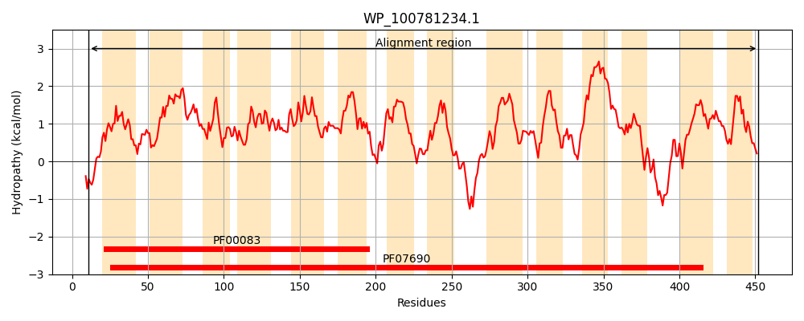
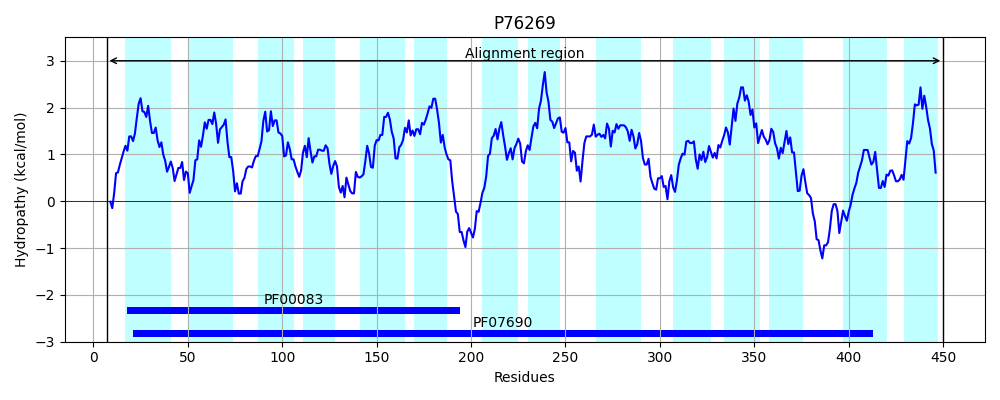
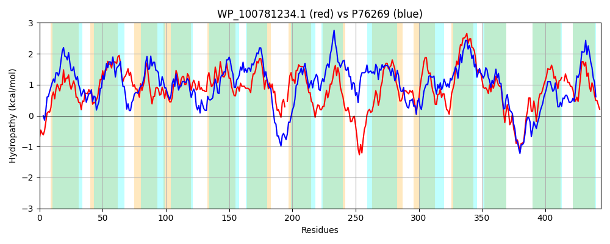

Hit Accession: P76269
Hit TCID: 2.A.1.3.17
Hit Description: gnl|BL_ORD_ID|11455 gnl|TC-DB|P76269|2.A.1.3.17 Hypothetical transport protein yebQ - Escherichia coli.
Mach Len: 444
e:0.000000
Query TMS Count : 14
Hit TMS Count: 14
TMS-Overlap Score: 12.750000
Predicted Substrates:CHEBI:9731;trimethoprim
BLAST Alignment:
Score: 753 , Bit scores: 294 bits, E-value: 2.8e-95, Alignment length: 444, Percentage identity: 37
Query: 11 EGLPGPARARVMAAIMTTTLMGVFDGTMINIALPSMAQEMQVPASIAVWFANGYLLAAAMTLAIFAALAARLGYRSVFLAGLTTFTLTSLGCALANKPEVLIGMRVLQGIGGAATLSIAPAILRSVFPGRLLGRILGFHALLIASSSAIGPVLGGTILHTLSWQWLFAINVLPGTLALLLAVRALPRDAIPMQAP-FDTVGAILSALLLGSTIMAANSLQNATSQFGSLCWMALAALSGMAFIWQIRRTDHPLLPPTMFKNERFTLAAFTSMIAFVSQGITFIALPFLFQSEYGYSPVVSALLFTPWPLGIVLIAPHAGRWADTISAPAISTLGLVIFVVGLILLATLPAGPSMWDICLRSLVCGIGFGCFQSPNNREMLSNVIREHASYASGVLSIMRTFGQCLGAAAVAVLL-AADERSIHVALWSAAAASAVSVIVSASRL 452
+GLP P R + I+ M V DG + N+ALP++A ++ + ++W N Y +A ++L F+ L GYR ++ GL F L+SL CAL++ ++L RV+QG GGAA +S+ A++R ++P R LGR +G ++ ++A SSA GP + IL SW+WLF INV G +ALLLA+R LP + P FD A+++AL G I A + S + + + G+ FI + PLLP + + F+L+ TS+ +F +Q + ++LPF Q+ G S V + LL TPWPL +++AP AG + + A + LGL I GL L LPA P+ +I ++CG GFG FQSPNN ++++ RE + ASG+L R GQ GAA VA++L + HV+L +AA + ++ VS R+
Sbjct: 7 DGLPLPQRYGAILTIVIGISMAVLDGAIANVALPTIATDLHATPASSIWVVNAYQIAIVISLLSFSFLGDMFGYRRIYKCGLVVFLLSSLFCALSDSLQMLTLARVIQGFGGAALMSVNTALIRLIYPQRFLGRGMGINSFIVAVSSAAGPTIAAAILSIASWKWLFLINVPLGIIALLLAMRFLPPNGSRASKPRFDLPSAVMNALTFGLLITALSGFAQGQSLTLIAAELVVMVVVGIFFIRRQLSLPVPLLPVDLLRIPLFSLSICTSVCSFCAQMLAMVSLPFYLQTVLGRSEVETGLLLTPWPLATMVMAPLAGYLIERVHAGLLGALGLFIMAAGLFSLVLLPASPADINIIWPMILCGAGFGLFQSPNNHTIITSAPRERSGGASGMLGTARLLGQSSGAALVALMLNQFGDNGTHVSLMAAAILAVIAACVSGLRI 450 | Protein Hydropathy Plots: |
|---|
|  |  |
Pairwise Alignment-Hydropathy Plot:
|
|---|
|  |